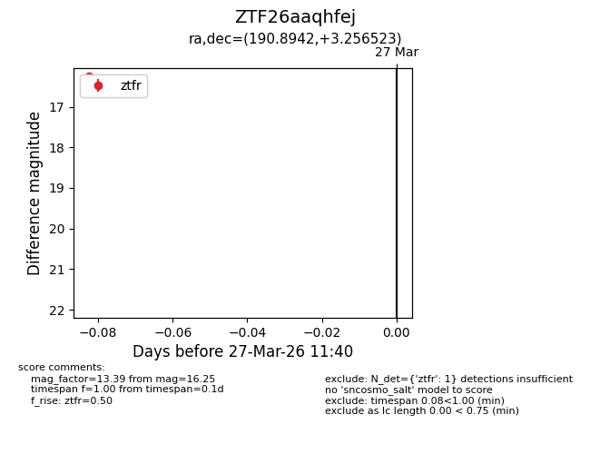
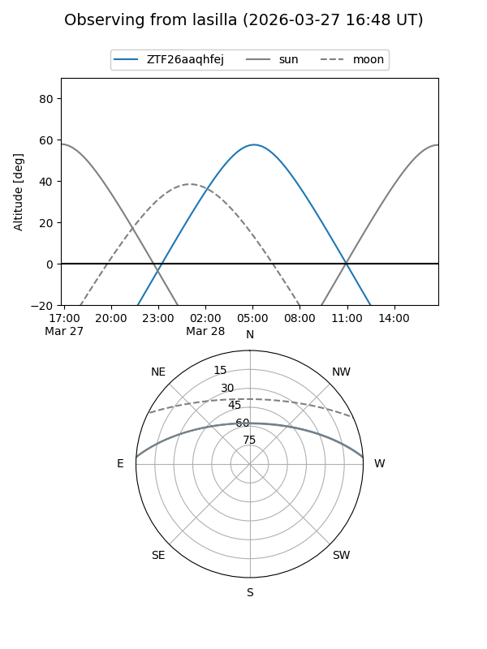
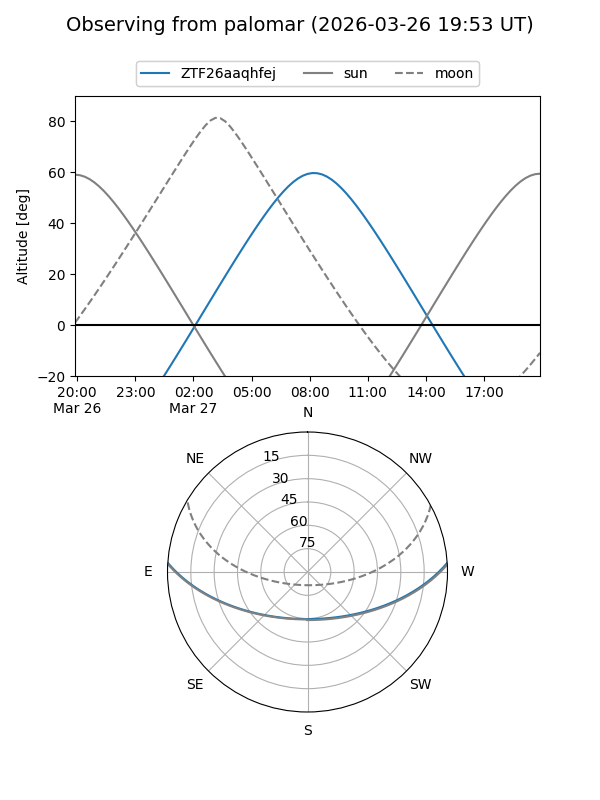

ZTF26aaqhfej
Target ZTF26aaqhfej at 2026-03-27 11:43
Aliases and brokers:
FINK: link
Lasair: link
ALeRCE: link
alt names
ZTF26aaqhfej (ztf,fink_ztf)
Coordinates:
equatorial (ra, dec) = 190.8942,+3.25652
equatorial (HMS+DMS) = 12:43:34.62,+03:15:23.48
galactic (l, b) = (298.0929,+66.05438)
Flags:
Photometry:
last ztfr=16.25
1 ztfr detections
Lightcurve

Visibility


Additional plots